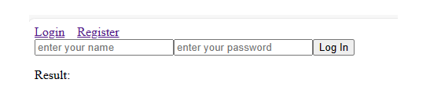

This project is hangman. It starts out with a blank set of spaces indicating how long the word is.
At the beginning of the game the player will enter their name in order to start guessing.
For every wrong guess it will animate a part of the body being added to the hangman.
Once the player wins a list of past games from other players will apear that took the same amount of guesses as the current player.
If the player loses the game will automatically restart but not before displaying to the player what the word was.
For this project we used the MERN stack. In the backend with the MongoDB database we created a list of objects that could display the users information.
In the frontend we used animations and arrays to show the both the hangman as well as the empty set of characters to display how many spaces in the word.
We used POST and GET routes to store and retrieve information from the database. We kept all critical information in the backend for security.
Some technical problems that I solved was making sure that the word was random each time, storing the words in the database, and handling all guess logic.
Database management storing and lookup, backend word lookup and guess logic, frontend logic for determing the winning and losing scenarios.
This is a bank app project. It beginns on the home page where the player can either login or create an account.
If they login the will enter their username and password. If they create an account they will have to create a username and password.
Once logged in they will have the option to either withdrawl or deposit money into any of thier accounts. Or they can transfer money from one account to another.
They will also be allowed to look at the history for thier individual accounts or the entire account.
For this project we used the MERN stack. In the backend with the MongoDB database we created a list of objects in an array that could display the history.
In the frontend we used we used modals for popups along with sessions to verify the user for privilaged URL's.
We used POST and GET routes to store and retrieve information from the database. We kept all critical information in the backend for security.
Some technical problems that I solved was making the modals operational, along with the frontend transfer, withdrawl, and deposit logic.
Helped design the frontend along with the overall flow of how the game would operate. Front end math logic, and calling routes to the backend.
This is a speed card game project. It begins with 5 cards for each player and two cards in the middle.
The players are allowed to put a card on one of the two middle cards if the card they are placing is one higher or one lower than the card they are placing on.
If there is a stalemate the two middle side decks will be shuffled and create two new middle cards that can be placed on.
When someone wins or runs out of cards the players will be taken to a modal to enter their name where a list of past games from that player will pop up.
For this project we used the MERN stack. In the backend with the MongoDB database we created a list of objects in an array that could display the history.
In the frontend we used we used modals for popups along with web sockets to identify the players and create a multiplayer experience.
We used POST and GET routes to store and retrieve information from the database using web sockets.
Some technical problems that I solved was making the modal operational, using POST and GET routes to store and retrieve information for the history,
identify the winning condition, connecting the database, and helped set up the web sockets.
Designed the database table, connected 2 ports one for the server and one for the database, history modal, winning condition, created the routes for the project.
This is an airline reservation system, you can select your seat and pick your flight.
The player is allowed to pick any open seat. This will be marked with a green background.
They can also pick between flights which will have a different row structure.
For this project I used C# .NET, this was connected to a microsoftSQL database for data retrieval and updates.
Some technical problems that I solved was connecting the database and finding a way to select between the two flights.

This is a tic tac toe game
The game starts when the player presses start game. The player can press any open square.
Once a winner has been determined the squares with three in a row will light up red.
For this project I used C# .NET.
Some technical problems that I solved was Determing a winner and passing data between classes with security in mind.